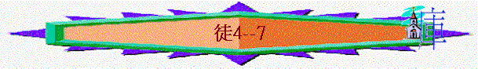

|
作主見證的經過 |
||||
|
緒論 |
預備 |
開始－在耶路撒冷作見證 |
擴張－在撒瑪利亞－猶大作見證 |
延伸－至地極作見證 |
|
1 |
２－７ |
８－１２ |
１３－２８ |
|
二）開始 － 見證在耶路撒冷（２：１－４７）
３）攔阻的出現（４－７）
ａ）敵人的反對（４）
i）反對的因由
（１）嫉妒（５：１７）
（２）不信（４：１）
（３）指出他們有錯（５：２８）
ii）使徒的回應－仍堅穩向前
原因：
（１）奉主名作
（２）被聖靈充滿
（３）聽從神不聽從人
（４）祈禱出來的能力
ｂ）罪惡的問題（５：１－１７）
i）問題的產生
（１）個人的問題
（２）撒但的工作
（３）內�堛漕p慾
（４）屬靈的無知
ii）處理的手法
（１）斥其罪
（２）給機會
（３）受管教
iii）帶來的結果
（１）全教會都懼怕
（２）百姓尊重信徒
（３）信而歸主的增多
ｃ）逼迫的再臨（５：１７－２４）
i）特色
（1） 不住的逼迫
（2） 嚴嚴的捆鎖
ii）保守
（1） 使者的拯救
（2） 別人的效力
iii）回應
（1） 仍有使命
（2） 仍有勇氣
（3） 仍有立場
（4） 仍有歡喜
ｄ）內部的怨言（６：１－７）
i）怨言
ii）處理
（1） 要重視
（2） 要全面
（3） 有解決
ｅ）門徒的被殺（６：８－７：６０）
i）司提反的見證
（1） 名聲的見證
（2） 屬靈的見證
（3） 樣貌的見證
（4） 言語的見證
ii）百姓們的抗拒
（1） 敵不住 － 毀謗
（2） 聽見了 － 硬頸
（3） 憤怒下 － 拿石
iii）司提反的表現 － 定睛望天
（1） 看見神的榮耀
（2） 莫視週圍攻擊
（3） 渴求主的接去
（4） 關心地上同胞